Last updated: 2026-11-20
Live track record: 1214 closed picks, 33% win rate. Average predicted probability 41% vs actual 37% (46 decided). 98 still open. Full track record →
| Ticker | Sector | Dir | Price | RSI(7) | % vs 20D | Volume | Entry | Stop | Target | R:R | Avg Hold | Probability | Hist. win rate | Sample | Earnings |
|---|---|---|---|---|---|---|---|---|---|---|---|---|---|---|---|
| NVDA | Information Technology | LONG | $126.2 | 8.0 | -30.5% | 1.9x 🔥 | $126.2 | $119.89 | $181.49 | 8.76:1 | 7.8 | 34% | 64% | 14 | 96d |
| MU | Information Technology | LONG | $591.03 | 21.0 | -24.9% | 1.55x 🔥 | $591.03 | $561.48 | $786.48 | 6.61:1 | 8.7 | 20% | 50% | 12 | 27d |
| P | Information Technology | LONG | $91.84 | 29.3 | -18.0% | 0.94x | $91.84 | $87.25 | $111.96 | 4.38:1 | 7.6 | 43% | 50% | 10 | 96d |
| LRCX | Information Technology | LONG | $182.91 | 23.4 | -17.8% | 1.25x | $182.91 | $173.76 | $222.5 | 4.33:1 | 5.0 | 20% | 50% | 8 | 68d |
| ILMN | Health Care | LONG | $192.65 | 28.5 | -15.3% | 0.55x | $192.65 | $183.02 | $227.35 | 3.6:1 | 5.4 | 28% | 50% | 10 | 76d |
| KLAC | Information Technology | LONG | $126.75 | 24.8 | -15.2% | 1.06x | $126.75 | $120.41 | $149.38 | 3.57:1 | 4.5 | 20% | 50% | 8 | 69d |
| GEV | Industrials | LONG | $694.24 | 23.7 | -15.1% | 1.18x | $694.24 | $659.53 | $817.69 | 3.56:1 | 8.6 | 20% | 50% | 14 | 68d |
| MRNA | Health Care | LONG | $193.74 | 28.3 | -14.0% | 0.74x | $193.74 | $184.05 | $225.2 | 3.25:1 | 8.8 | 56% | 56% | 9 | 84d |
| UNH | Health Care | LONG | $340.05 | 23.4 | -13.8% | 1.59x 🔥 | $340.05 | $323.05 | $394.53 | 3.2:1 | 10.5 | 20% | 50% | 12 | 53d |
| JBL | Information Technology | LONG | $223.38 | 23.0 | -13.5% | 0.73x | $223.38 | $212.21 | $258.21 | 3.12:1 | 8.3 | 20% | 50% | 14 | 26d |
| CDNS | Information Technology | LONG | $279.29 | 18.3 | -13.4% | 0.72x | $279.29 | $265.32 | $322.63 | 3.1:1 | 7.5 | 40% | 55% | 11 | 90d |
| ETN | Industrials | LONG | $309.49 | 22.6 | -13.0% | 1.14x | $309.49 | $294.02 | $355.92 | 3.0:1 | 11.9 | 33% | 63% | 19 | 74d |
| XYZ | Financials | LONG | $69.76 | 22.6 | -12.8% | 1.24x | $69.76 | $66.27 | $80.0 | 2.94:1 | 9.6 | 37% | 60% | 15 | 101d |
| ADI | Information Technology | LONG | $346.83 | 22.7 | -12.8% | 1.11x | $346.83 | $329.49 | $397.64 | 2.93:1 | 8.6 | 47% | 70% | 10 | 4d |
| VST | Utilities | LONG | $115.18 | 25.1 | -12.4% | 1.05x | $115.18 | $109.42 | $131.54 | 2.84:1 | 8.8 | 35% | 50% | 12 | 97d |
| KEYS | Information Technology | LONG | $260.71 | 25.0 | -12.3% | 1.52x 🔥 | $260.71 | $247.68 | $297.19 | 2.8:1 | 6.8 | 35% | 50% | 10 | 95d |
| EXPE | Consumer Discretionary | LONG | $234.32 | 26.6 | -12.2% | 0.68x | $234.32 | $222.6 | $266.82 | 2.77:1 | 8.5 | 30% | 53% | 15 | 83d |
| VEEV | Health Care | LONG | $265.14 | 14.0 | -11.9% | 0.74x | $265.14 | $251.88 | $301.05 | 2.71:1 | 8.5 | 48% | 55% | 11 | 13d |
| ROK | Industrials | LONG | $361.08 | 25.3 | -11.7% | 0.94x | $361.08 | $343.03 | $409.04 | 2.66:1 | 7.3 | 41% | 71% | 14 | 76d |
| TXN | Information Technology | LONG | $263.18 | 24.1 | -11.7% | 1.05x | $263.18 | $250.02 | $297.99 | 2.65:1 | 11.2 | 47% | 55% | 11 | 67d |
| APH | Information Technology | LONG | $69.72 | 25.9 | -10.4% | 0.91x | $69.72 | $66.24 | $77.82 | 2.32:1 | 7.7 | 35% | 65% | 17 | 68d |
| IP | Materials | LONG | $30.27 | 22.4 | -10.4% | 1.01x | $30.27 | $28.76 | $33.79 | 2.32:1 | 8.0 | 34% | 57% | 21 | 69d |
| CSCO | Information Technology | LONG | $90.12 | 27.8 | -10.3% | 0.78x | $90.12 | $85.61 | $100.48 | 2.3:1 | 6.8 | 41% | 71% | 7 | 82d |
| SLB | Energy | LONG | $45.69 | 18.1 | -10.3% | 1.03x | $45.69 | $43.41 | $50.94 | 2.3:1 | 8.6 | 50% | 73% | 15 | 63d |
| FIX | Industrials | LONG | $1034.87 | 36.1 | -10.2% | 0.93x | $1034.87 | $983.13 | $1152.54 | 2.27:1 | 5.0 | 40% | 55% | 11 | 90d |
| FFIV | Information Technology | LONG | $302.57 | 29.0 | -10.1% | 0.33x | $302.57 | $287.44 | $336.48 | 2.24:1 | 8.5 | 20% | 50% | 8 | 67d |
| JCI | Industrials | LONG | $128.82 | 27.1 | -9.8% | 0.65x | $128.82 | $122.38 | $142.85 | 2.18:1 | 13.3 | 60% | 90% | 10 | 75d |
| VLO | Energy | LONG | $333.86 | 26.5 | -9.7% | 0.64x | $333.86 | $317.17 | $369.72 | 2.15:1 | 10.4 | 61% | 83% | 6 | 69d |
| NWSA | Communication Services | LONG | $25.01 | 22.3 | -9.7% | 0.64x | $25.01 | $23.76 | $27.69 | 2.14:1 | 7.7 | 39% | 69% | 13 | 76d |
| MPC | Energy | LONG | $367.17 | 26.2 | -9.6% | 0.7x | $367.17 | $348.81 | $406.1 | 2.12:1 | 10.4 | 73% | 80% | 10 | 74d |
| DVN | Energy | LONG | $41.6 | 28.0 | -9.5% | 0.73x | $41.6 | $39.52 | $45.99 | 2.11:1 | 8.0 | 74% | 82% | 11 | 88d |
| IRM | Real Estate | LONG | $101.91 | 22.1 | -9.4% | 0.67x | $101.91 | $96.81 | $112.54 | 2.09:1 | 10.6 | 39% | 62% | 13 | 83d |
| IBKR | Financials | LONG | $70.99 | 25.6 | -9.1% | 0.78x | $70.99 | $67.44 | $78.13 | 2.01:1 | 8.3 | 30% | 60% | 10 | 67d |
LONG = oversold, expected to bounce back up toward the 20-day average. SHORT = overbought, expected to pull back down toward the 20-day average. Stop-loss = 5% against the position. Probability = this ticker's historical win rate minus penalties when the chart structure is broken (hover for reasons). 🔥 means volume was 1.5x+ the 20-day average. Tickers with earnings due within 3 days are excluded. Macro events pulled live from a public economic calendar feed (high-impact USD events only). Mechanical screen only — check news before acting. Not financial advice.
Probability 64% → 34%: broke below 60d swing low (-15); below 200-day avg, downtrend (-8); lower highs and lower lows (-7)
Earlier signals on NVDA: 2026-11-19: ❌ hit stop -5.0% 2026-11-17: ❌ hit stop -5.0% 2026-11-12: ❌ hit stop -5.0%
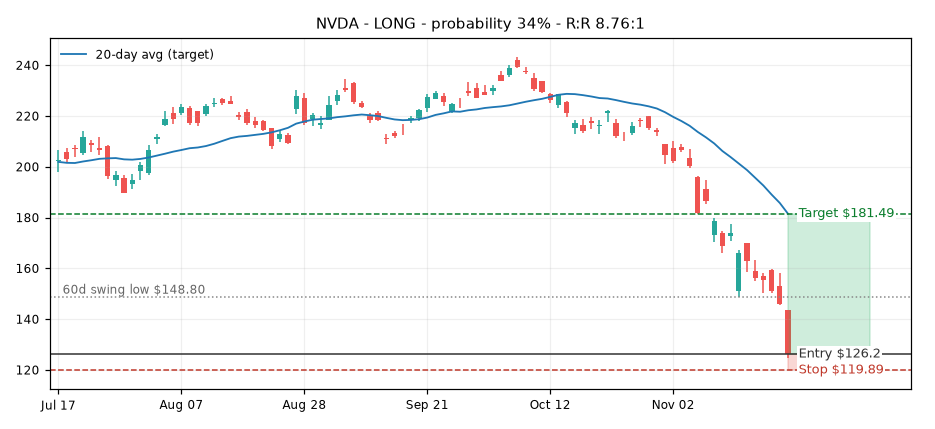
Probability 50% → 20%: broke below 60d swing low (-15); below 200-day avg, downtrend (-8); lower highs and lower lows (-7)
Earlier signals on MU: 2026-11-05: ❌ hit stop -5.0% 2026-11-04: ❌ hit stop -5.6% 2026-11-02: ❌ hit stop -5.0%
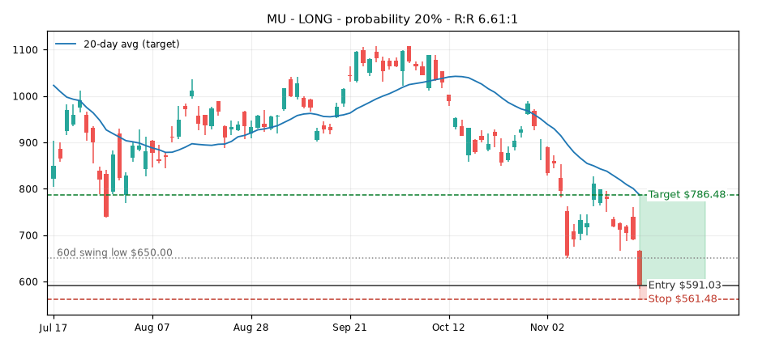
Probability 50% → 43%: lower highs and lower lows (-7)
Earlier signals on P: 2026-11-18: ✅ hit target +13.2%
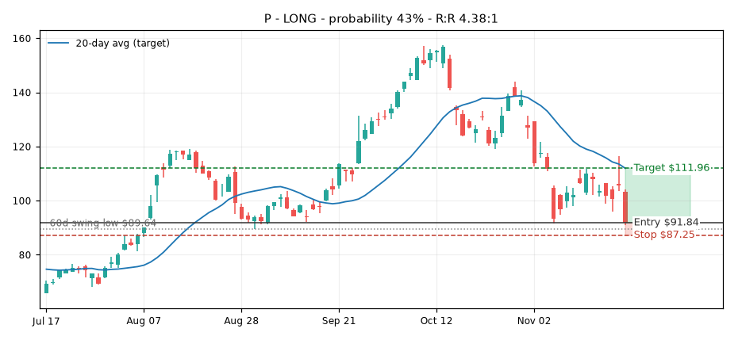
Probability 50% → 20%: broke below 60d swing low (-15); below 200-day avg, downtrend (-8); lower highs and lower lows (-7)
Earlier signals on LRCX: 2026-11-05: ⏳ still open 2026-11-04: ❌ hit stop -5.6% 2026-11-03: ❌ hit stop -9.1%
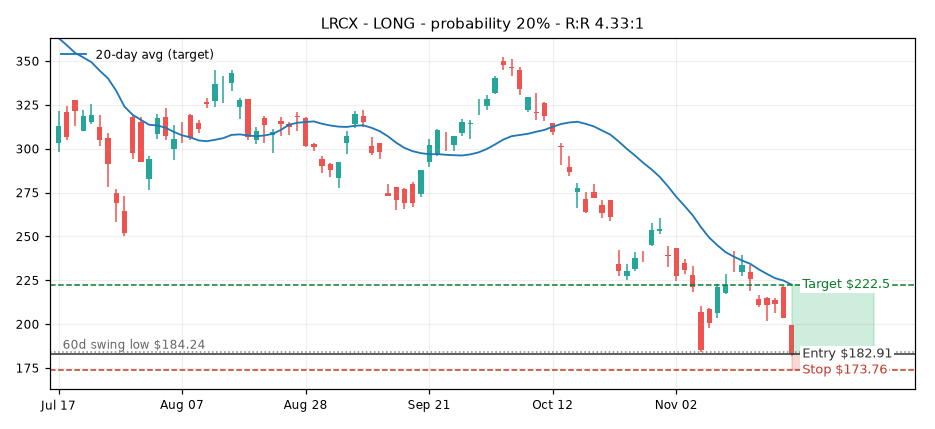
Probability 50% → 28%: broke below 60d swing low (-15); lower highs and lower lows (-7)
Earlier signals on ILMN: 2026-11-16: ⏳ still open 2026-11-12: ❌ hit stop -5.0% 2026-11-05: ❌ hit stop -5.0%
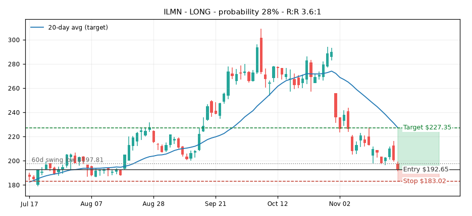
Probability 50% → 20%: broke below 60d swing low (-15); below 200-day avg, downtrend (-8); lower highs and lower lows (-7)
Earlier signals on KLAC: 2026-11-05: ✅ hit target +23.0% 2026-11-04: ❌ hit stop -5.0% 2026-11-02: ❌ hit stop -7.2%
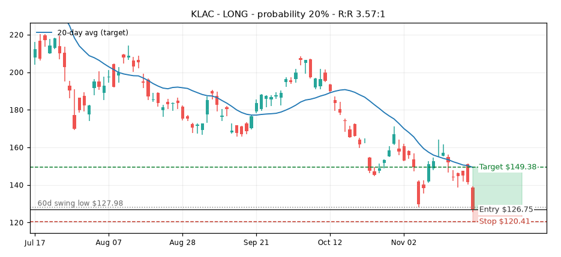
Probability 50% → 20%: broke below 60d swing low (-15); below 200-day avg, downtrend (-8); lower highs and lower lows (-7)
Earlier signals on GEV: 2026-11-05: ❌ hit stop -5.0% 2026-10-23: ❌ hit stop -5.0% 2026-10-22: ❌ hit stop -5.0%
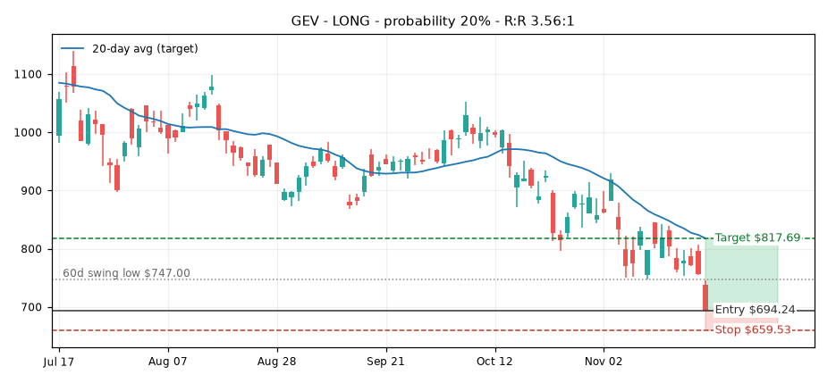
Probability 56%: no structure warnings.
Earlier signals on MRNA: 2026-11-19: ⏳ still open 2026-11-17: ❌ hit stop -5.4% 2026-10-22: ✅ hit target +13.7%
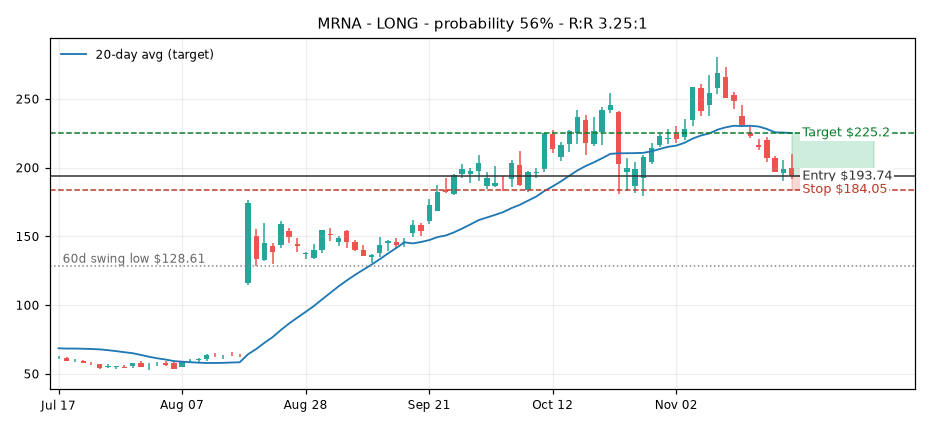
Probability 50% → 20%: broke below 60d swing low (-15); below 200-day avg, downtrend (-8); lower highs and lower lows (-7)
Earlier signals on UNH: 2026-11-19: ⏳ still open 2026-11-18: ❌ hit stop -5.0%
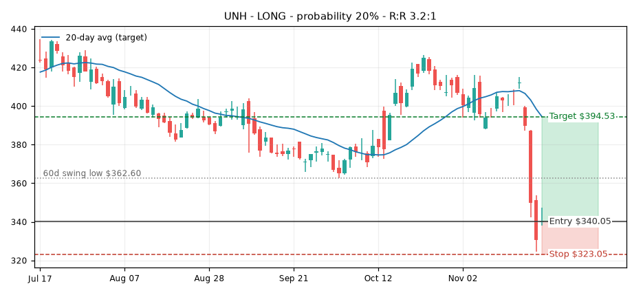
Probability 50% → 20%: broke below 60d swing low (-15); below 200-day avg, downtrend (-8); lower highs and lower lows (-7)
Earlier signals on JBL: 2026-11-05: ❌ hit stop -5.0% 2026-11-04: ❌ hit stop -5.0% 2026-10-22: ❌ hit stop -5.0%
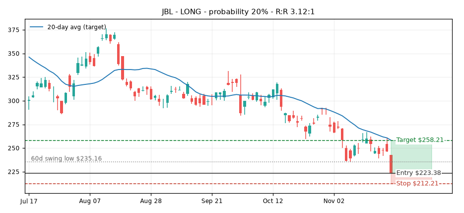
Probability 55% → 40%: below 200-day avg, downtrend (-8); lower highs and lower lows (-7)
Earlier signals on CDNS: 2026-09-16: ✅ hit target +12.9% 2026-09-15: ✅ hit target +11.7% 2026-09-11: ✅ hit target +10.8%
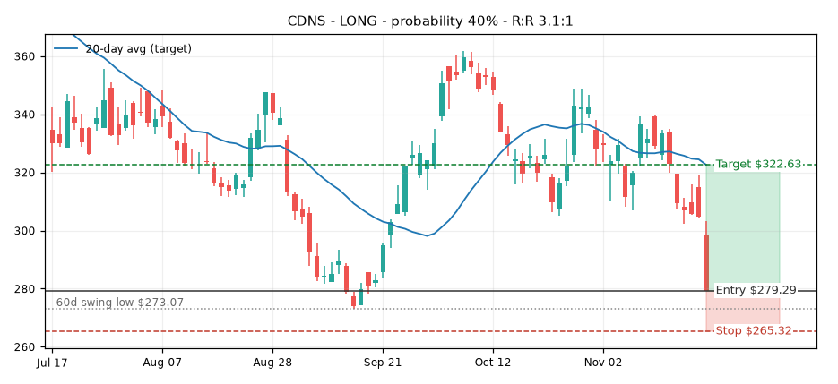
Probability 63% → 33%: broke below 60d swing low (-15); below 200-day avg, downtrend (-8); lower highs and lower lows (-7)
Earlier signals on ETN: 2026-11-05: ❌ hit stop -5.0% 2026-11-04: ❌ hit stop -5.0% 2026-10-23: ❌ hit stop -7.7%
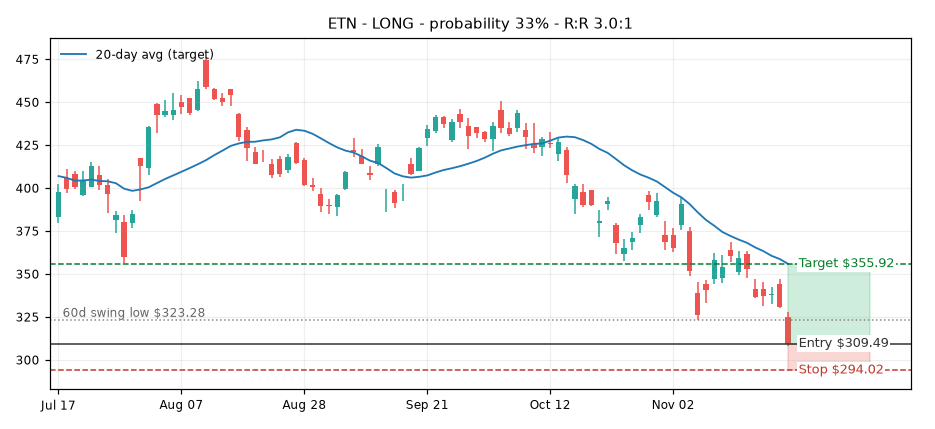
Probability 60% → 37%: broke below 60d swing low (-15); below 200-day avg, downtrend (-8)
Earlier signals on XYZ: 2026-11-04: ✅ hit target +11.9%
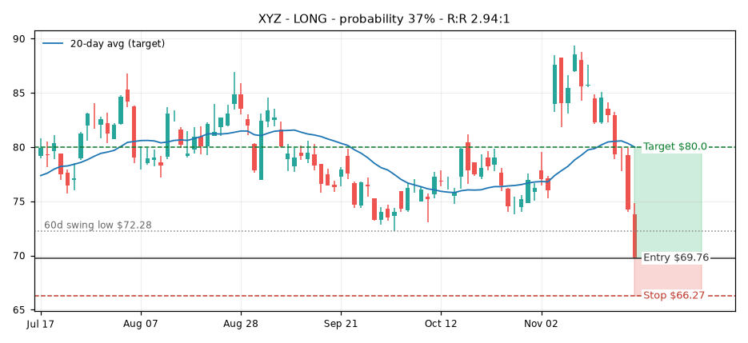
Probability 70% → 47%: broke below 60d swing low (-15); below 200-day avg, downtrend (-8)
Earlier signals on ADI: 2026-11-06: ✅ hit target +10.4%
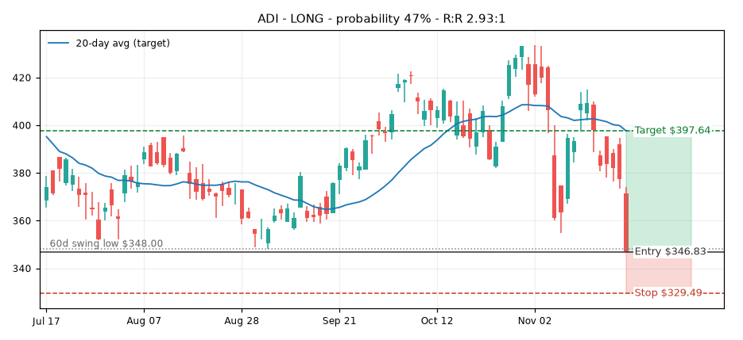
Probability 50% → 35%: below 200-day avg, downtrend (-8); lower highs and lower lows (-7)
Earlier signals on VST: 2026-11-06: ❌ hit stop -5.0% 2026-11-02: ❌ hit stop -6.8% 2026-10-30: ❌ hit stop -8.1%
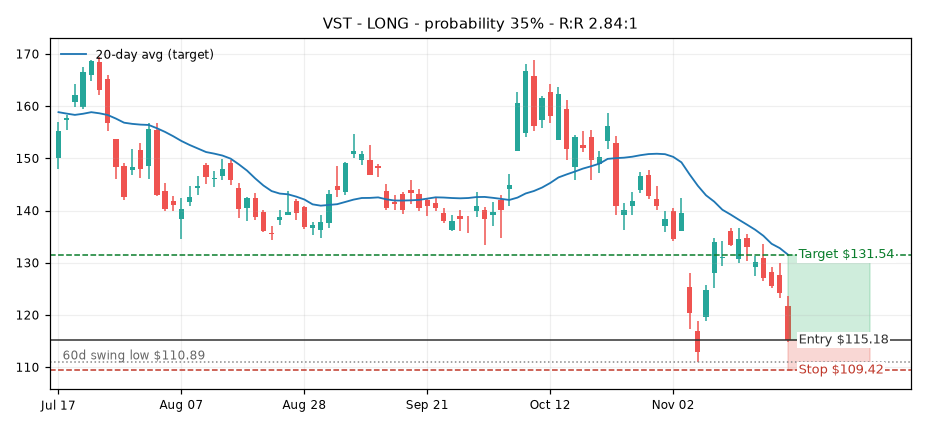
Probability 50% → 35%: below 200-day avg, downtrend (-8); lower highs and lower lows (-7)
Earlier signals on KEYS: 2026-11-05: ⏳ still open 2026-11-04: ❌ hit stop -5.0% 2026-11-03: ❌ hit stop -5.0%
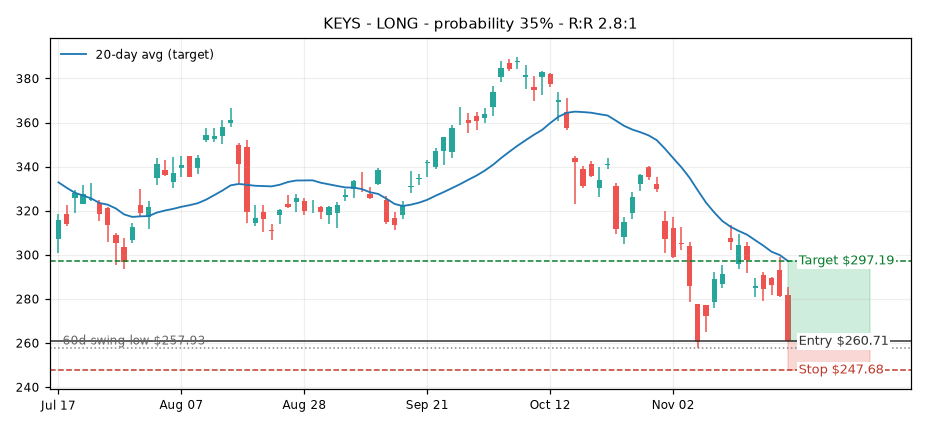
Probability 53% → 30%: broke below 60d swing low (-15); below 200-day avg, downtrend (-8)
Earlier signals on EXPE: 2026-11-18: ⏳ still open 2026-11-10: ❌ hit stop -5.2% 2026-09-24: ✅ hit target +13.3%
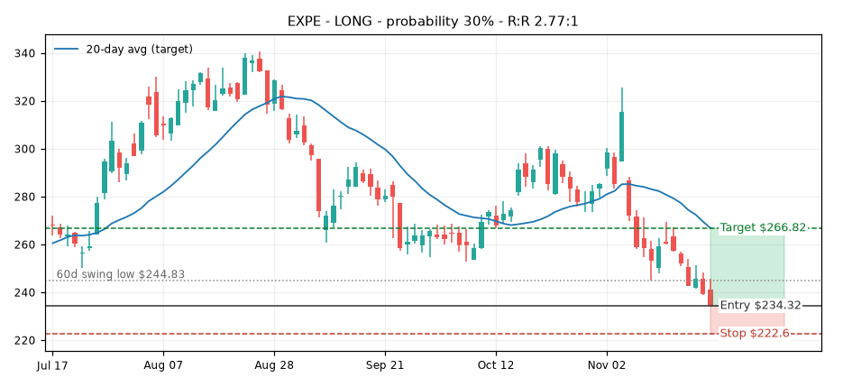
Probability 55% → 48%: lower highs and lower lows (-7)
Earlier signals on VEEV: 2026-11-19: ⏳ still open 2026-11-18: ❌ hit stop -5.0% 2026-09-03: ⌛ expired +3.9%
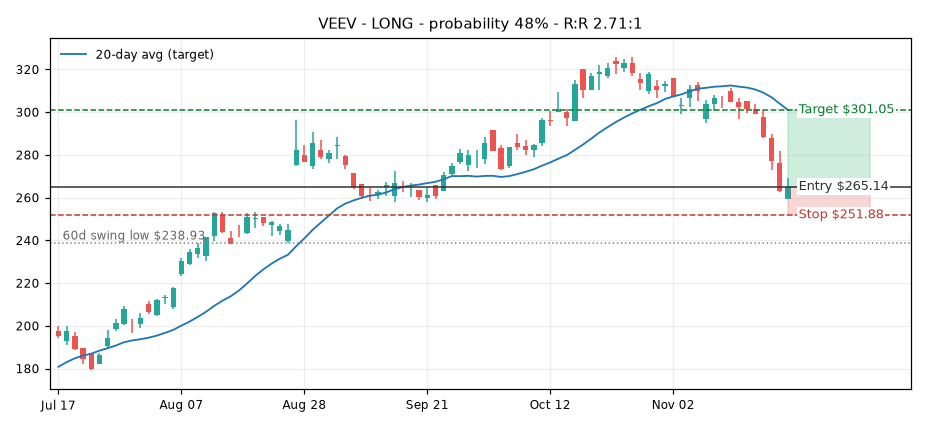
Probability 71% → 41%: broke below 60d swing low (-15); below 200-day avg, downtrend (-8); lower highs and lower lows (-7)
Earlier signals on ROK: 2026-11-05: ❌ hit stop -5.0%
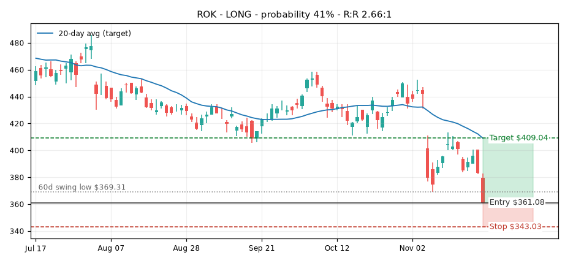
Probability 55% → 47%: below 200-day avg, downtrend (-8)
Earlier signals on TXN: 2026-08-25: ❌ hit stop -5.0% 2026-08-24: ⌛ expired +4.3%
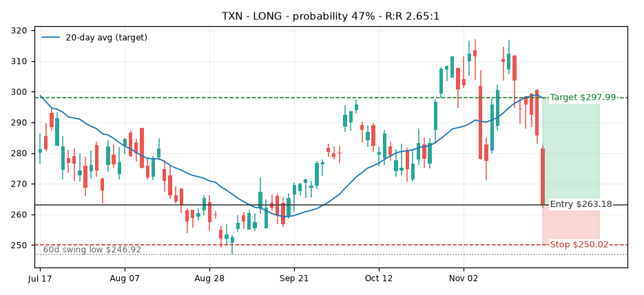
Probability 65% → 35%: broke below 60d swing low (-15); below 200-day avg, downtrend (-8); lower highs and lower lows (-7)
Earlier signals on APH: 2026-11-05: ✅ hit target +10.9% 2026-10-23: ✅ hit target +12.0% 2026-10-22: ✅ hit target +15.1%
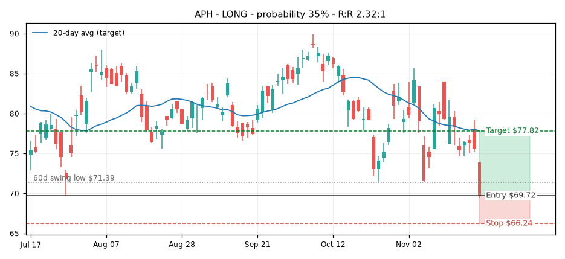
Probability 57% → 34%: broke below 60d swing low (-15); below 200-day avg, downtrend (-8)
Earlier signals on IP: 2026-09-17: ❌ hit stop -5.0% 2026-09-16: ❌ hit stop -5.0% 2026-09-15: ❌ hit stop -5.0%
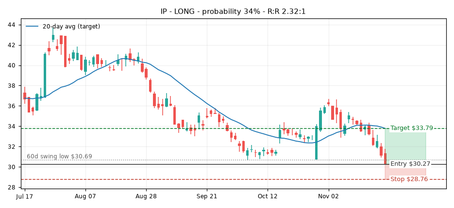
Probability 71% → 41%: broke below 60d swing low (-15); below 200-day avg, downtrend (-8); lower highs and lower lows (-7)
Earlier signals on CSCO: 2026-11-05: ❌ hit stop -5.0%
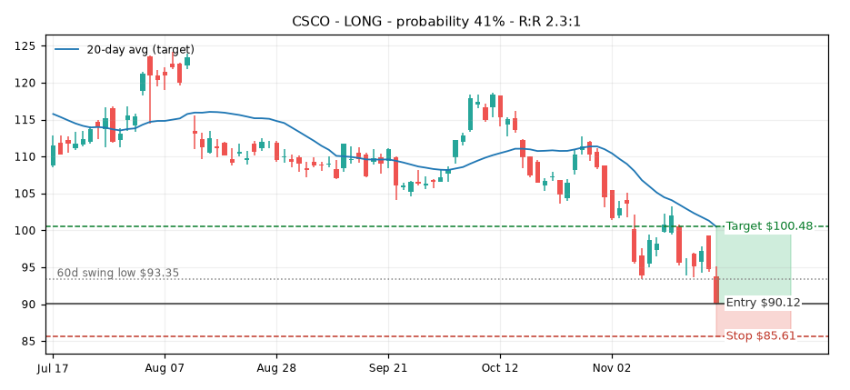
Probability 73% → 50%: broke below 60d swing low (-15); below 200-day avg, downtrend (-8)
Earlier signals on SLB: 2026-08-31: ✅ hit target +11.0%
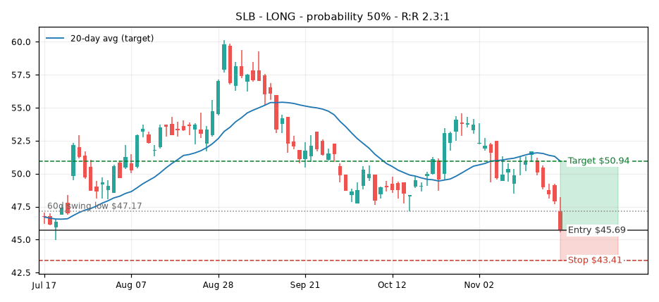
Probability 55% → 40%: below 200-day avg, downtrend (-8); lower highs and lower lows (-7)
Earlier signals on FIX: 2026-11-05: ⏳ still open 2026-11-04: ❌ hit stop -5.0% 2026-11-03: ❌ hit stop -12.6%
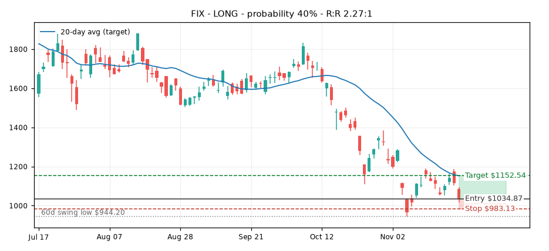
Probability 50% → 20%: broke below 60d swing low (-15); below 200-day avg, downtrend (-8); lower highs and lower lows (-7)
Earlier signals on FFIV: 2026-11-06: ⏳ still open 2026-11-04: ❌ hit stop -5.0% 2026-11-03: ❌ hit stop -5.0%
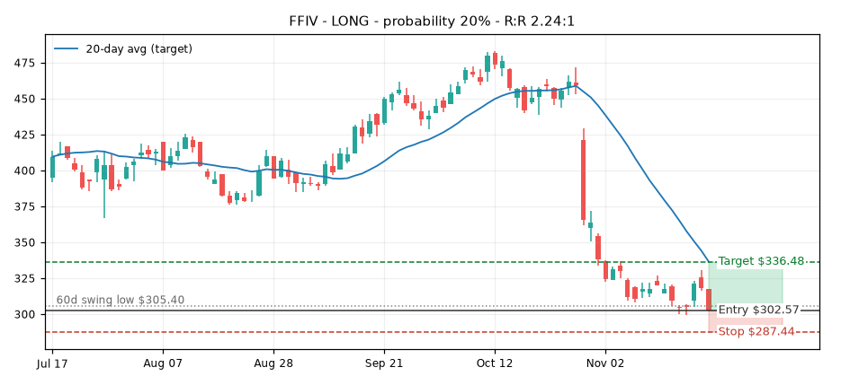
Probability 90% → 60%: broke below 60d swing low (-15); below 200-day avg, downtrend (-8); lower highs and lower lows (-7)
Earlier signals on JCI: 2026-11-05: ⏳ still open 2026-08-25: ⌛ expired +2.9% 2026-08-24: ❌ hit stop -5.0%
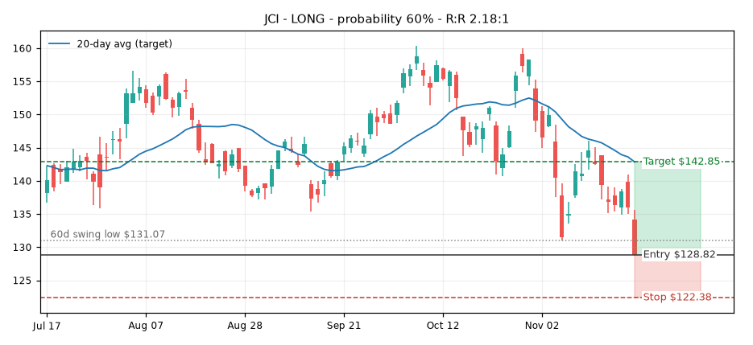
Probability 83% → 61%: broke below 60d swing low (-15); lower highs and lower lows (-7)
Earlier signals on VLO: 2026-11-06: ⏳ still open 2026-11-04: ❌ hit stop -5.0% 2026-11-02: ❌ hit stop -5.0%
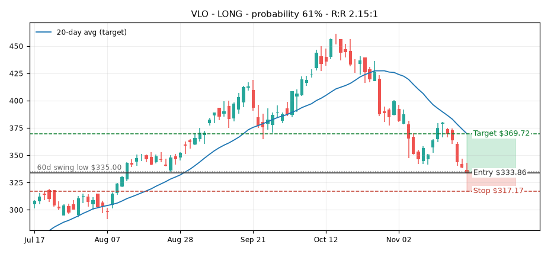
Probability 69% → 39%: broke below 60d swing low (-15); below 200-day avg, downtrend (-8); lower highs and lower lows (-7)
Earlier signals on NWSA: 2026-11-19: ⏳ still open 2026-11-05: ❌ hit stop -5.0% 2026-08-25: ✅ hit target +6.0%
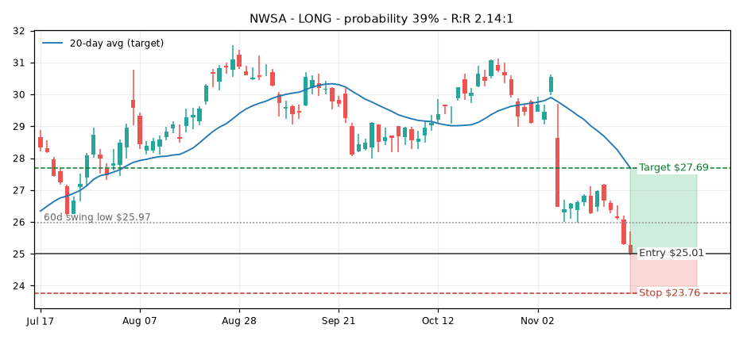
Probability 80% → 73%: lower highs and lower lows (-7)
Earlier signals on MPC: 2026-11-19: ⏳ still open 2026-11-04: ❌ hit stop -5.0% 2026-08-25: ❌ hit stop -5.5%
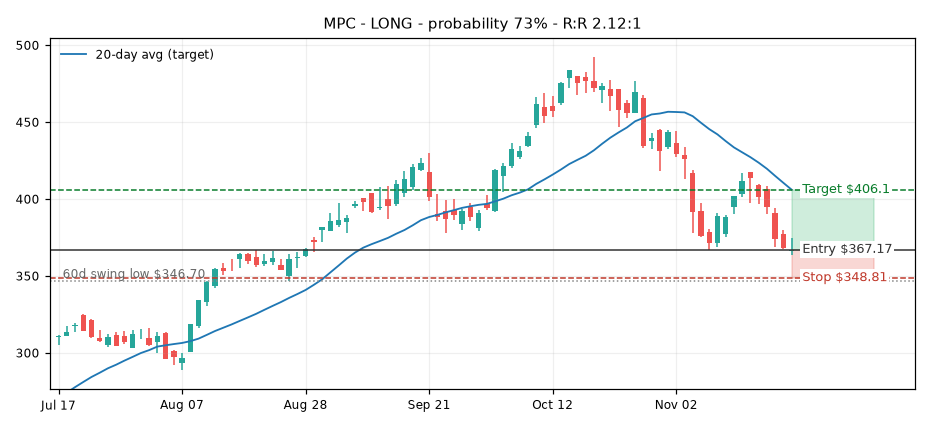
Probability 82% → 74%: below 200-day avg, downtrend (-8)
Earlier signals on DVN: 2026-11-06: ⏳ still open 2026-08-24: ❌ hit stop -5.0% 2026-08-24: ❌ hit stop -5.4%
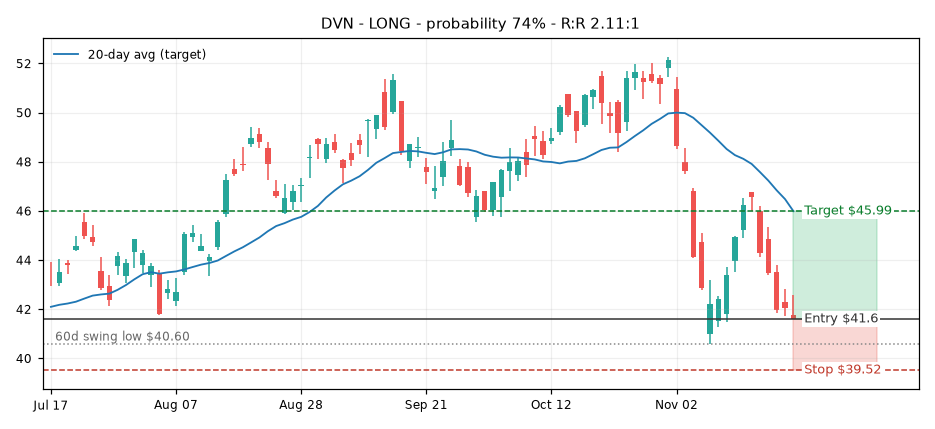
Probability 62% → 39%: broke below 60d swing low (-15); below 200-day avg, downtrend (-8)
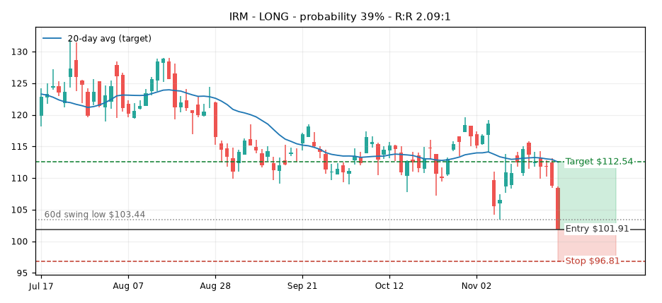
Probability 60% → 30%: broke below 60d swing low (-15); below 200-day avg, downtrend (-8); lower highs and lower lows (-7)
Earlier signals on IBKR: 2026-11-02: ✅ hit target +11.8% 2026-10-30: ❌ hit stop -5.0% 2026-08-25: ✅ hit target +7.8%
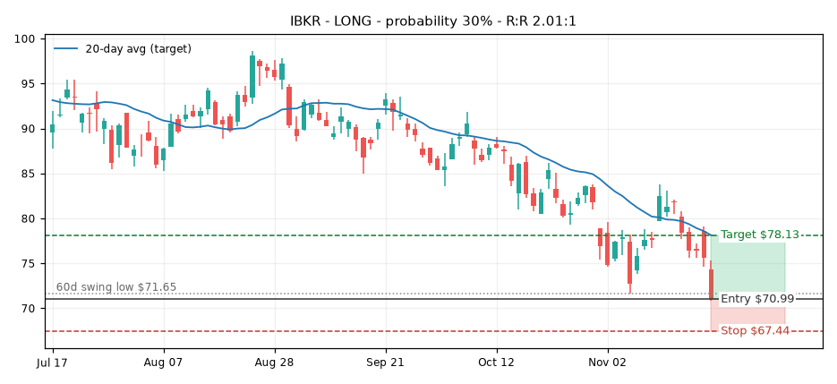